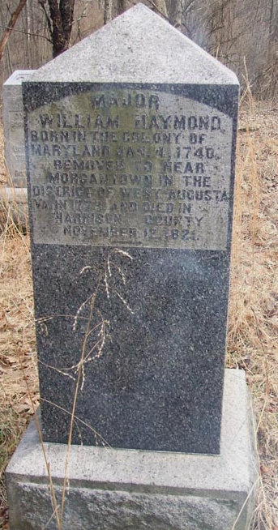

Major William Haymond, 01/04/1740 - 11/12/1821
This page is dedicated to all things found relating to Major William Haymond whose military service spanned from pre French Indian War to post Revolutionary War.
Go Back Veteran List
Go Back Home
- Wikipedia page on William Haymond
- Short life summary as well as images of William's estate appraisal.
- A short life summary on geni.com
- A life summary by the California Society of the Sons of the American Revolution
- Page for William Haymond in the West Virginian genealogy page Doddridge County Roots
- Find a gravestone site for William Haymond